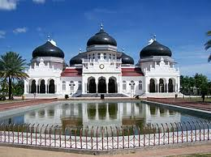

Masjid Raya Baiturrahman Banda Aceh atau yang lebih dikenal dengan Masjid Raya Baiturrahman atau Masjid Kesultanan Aceh adalah sebuah masjid bersejarah yang berada di Kota Banda Aceh, Provinsi Aceh, Indonesia. 
(sumber=google)
Masakan Mie Aceh adalah berupa mie yang agak tebal dan berwarna kuning dan dimasak dengan kuah kari yang kental dan berwarna agak pekat. Rasanya yang pedas dengan aroma yang gurih mampu mengunggah banyak orang untuk mencoba kuliner yang satu ini. Mie Aceh bisa dimasak dengan berbagai variasi.
.jpg)
(sumber=google)
Tarian tradisional Aceh sangat beragam dan kaya akan nilai budaya. Beberapa tarian yang paling terkenal dari Aceh antara lain Tari Saman, Tari Seudati, Tari Ratoh Jaroe, Tari Tarek Pukat, dan Tari Rapa'i Geleng.
.jpg)
(sumber=google)
Adat Aceh adalah serangkaian tradisi, upacara, dan nilai-nilai yang diwariskan secara turun temurun oleh masyarakat Aceh. Adat ini mencakup berbagai aspek kehidupan, mulai dari kelahiran, perkawinan, kematian, hingga kegiatan sosial dan keagamaan. Adat Aceh sangat kaya dan beragam, mencerminkan nilai-nilai budaya, agama, dan kearifan lokal masyarakatnya.
(sumber=google)